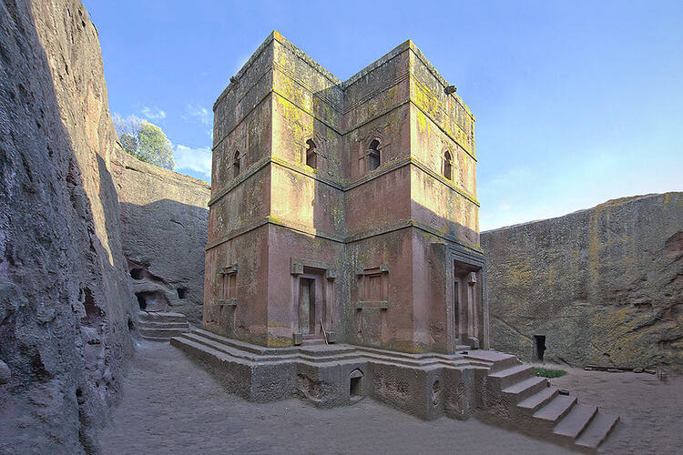

<body style="background-color: black;color: white;">
    For centuries, the Church and State have been jointly responsible for the holy site of Lalibela. 
    Home to a large community of priests and monks, it is a living site which draws many pilgrims to celebrate the great feasts of the Ethiopian Christian calendar.
     This active and energetic perspective is central to the management of the site.
No special legal framework is provided to protect the Rock-Hewn Churches except the general law, Proclamation No. 209/2000, which has also established the institution in charge,
 the Authority for Research and Conservation of Cultural Heritage (ARCCH).
 With the Ethiopian Church as a partner,
 the ARCCH has a representative in Lalibela but a principle difficulty has been the harmonization of the different projects and effective coordination between the partners.
The property is administered under the regional and the Lasta district culture and tourism office. To prevent the property from the impact of development,
 a draft proclamation has been prepared but this is not yet ratified.
 A management plan has not yet been established.
 A four year Conservation Plan was established in 2006 but this has yet to be fully implemented.
 
</body>